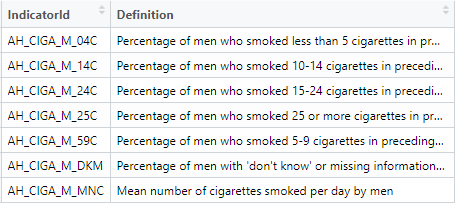
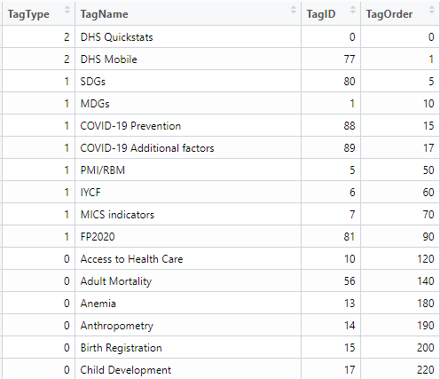
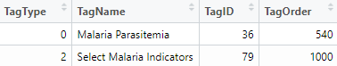
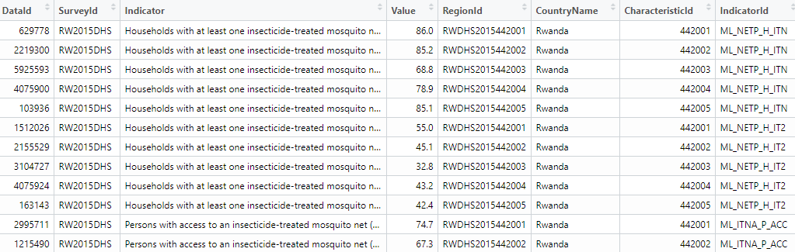
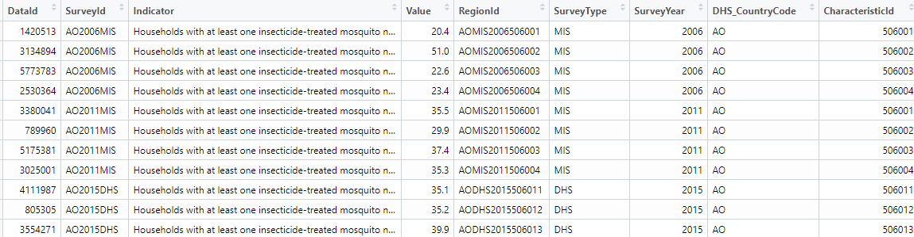
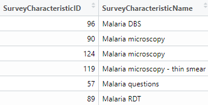
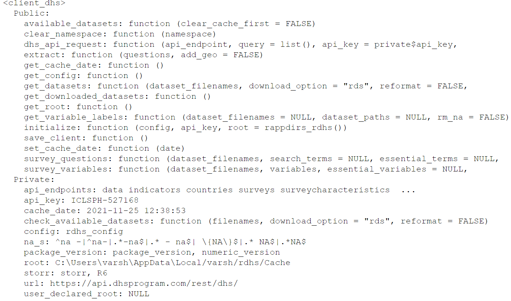

Demographic and Health Survey (DHS)
Data set details
| Data set description: | Malaria related data (although different data set could have be chosen) |
| Source: | The DHS (Demographic and Health Survey) Program |
| Details on the retrieved data: | Households with at least one insecticide treated net (ITN) in 2005. |
| Spatial and temporal resolution: | Yearly data at country level. |
rdhs package
This package gives the users the ability to access and make analysis on the Demographic and Health Survey (DHS) data. There are many functionalities that are useful in this package and they can be looked at one after another in more depth in the following sections.
Installation of the package rdhs
You can install the package from github with devtools:
install.packages("devtools")
devtools::install_github("ropensci/rdhs")library(rdhs)NOTE: If you wish to download survey datasets from DHS website, you will need to set up an account with the DHS website. Instructions on how to download the data can be found here.
You can also find the model datasets which are not the accurate data of each country and can be used to just practice the working of the package
rdhs. But if you want the survey datasets, then you would need to register and apply for access. The email, password and the project name that were used to create the account will then need to be provided tordhswhen attempting to download datasets, the process is explained well in this tutorial.
Access standard indicator data in R via the DHS API
The DHS program has published an API that gives access to a number of different data sets, where each represent one of the DHS API endpoints. The datasets include the standard health indicators and also a series of meta data sets that describe the types of surveys that have been conducted.
The function dhs_data() interacts with the published set of standard health indicator data calculated by DHS. We can either search for specific indicators, or by querying for indicators.
indicators <- dhs_indicators() # determines the indicators
# Take a look at the first 7 values within the indicator list
p1 <- indicators[order(indicators$IndicatorId), ][1:7, c("IndicatorId", "Definition")]
As there are many indicators that can be used for querying and you cannot remember every one of them, using tags for searching will be much easier. The DHS tags the indicators depending on what areas of demography and health they relate to. This can be done by using the dhs_tags() function.
tags <- dhs_tags() # search by tags
# search for 'HIV' within the column tagName using the grepl function
t1 <- tags[grepl("Malaria", tags$TagName), ]The available tags for analysis:

The chosen tag word for analysis:

Now that we have the tag we are looking for analysis “Malaria”, next we can concentrate on the geographic regions we are looking to work on , here we have taken as example for Rwanda and Tanzania in the year 2005 by using a specific study of tags , in our case we chose, TagId 79:
data_BT <- dhs_data(tagIds = 79, countryIds = c("RW", "TZ"), breakdown = "subnational", surveyYearStart = 2015)
# displaying the first 5 outputs for tanzania and brazil in the year 2005 for HIV attitudes
data_BT %>% datatable(extensions = c("Scroller", "FixedColumns"), options = list(
deferRender = TRUE,
scrollY = 350,
# scrollX = 350,
dom = "t",
scroller = TRUE,
fixedColumns = list(leftColumns = 3)
))
You can also use the DHS STATcompiler for a click and collect datasets. It is easier to use the rdhs API interaction to find out about the data for multiple countries an their breakdowns using the dhs_data() function.
# finding the data for Households with at least one insecticide treated net (ITN) and in the year 2005 by regions(subnational)
resp <- dhs_data(indicatorIds = "ML_IRSM_H_IIR", surveyYearStart = 2005, breakdown = "subnational")
Now let us visualise what we have from the above code, we can do so by creating a tibble of all the regions we are interested in and plotting it using the geom_point() function to see the number of households that have incorporated the ITN’s to help reduce Malaria.
# regions we are interested in
country <- c("Ghana", "Ethiopia", "Tanzania", "Zambia", "Rwanda", "Mali")
ggplot(
resp[resp$CountryName %in% country, ],
aes(
x = SurveyYear,
y = Value,
color = CountryName
)
) +
geom_point() +
geom_smooth(method = "lm") +
labs(y = "Households with at least one ins ecticide treated net (ITN)", color = "Country") +
facet_wrap(~CountryName)
Determine datasets and their surveys for analysis
Let’s say we want to get all the DHS survey data for Rwanda and Tanzania for the Malaria care. We begin with the DHS API interaction to determine our datasets.
charac <- dhs_survey_characteristics()
charac[grepl("Malaria", charac$SurveyCharacteristicName), ]
The DHS allows for countries to be filtered using their countryIds, which is one of the arguments in the dhs_survey() functions. To have a look at the different countryIds we have a function to find the same.
countryid <- dhs_countries(returnFields = c("CountryName", "DHS_CountryCode"))
countryid %>% datatable(extensions = c("Scroller", "FixedColumns"), options = list(
deferRender = TRUE,
scrollY = 350,
# scrollX = 350,
dom = "t",
scroller = TRUE,
fixedColumns = list(leftColumns = 3)
))
# finding all the surveys available for our search criteria
survey <- dhs_surveys(
surveyCharacteristicIds = 57,
countryIds = c("RW", "TZ"),
surveyType = "DHS",
surveyYearStart = 2015
)
# finally use this information to find the datasets we will want to download and specific file format can be used flat file in our case
datasets <- dhs_datasets(
surveyIds = survey$SurveyId,
fileFormat = "flat"
)
datasets %>% datatable(extensions = c("Scroller", "FixedColumns"), options = list(
deferRender = TRUE,
# scrollY = 350,
scrollX = 350,
dom = "t",
scroller = TRUE
))
Recommended file formats which can be downloaded are spss (.sav), which can be given as an argument as fileFormat = "SV" or the other option would be flat file format (.dat), which can be given as fileFormat = "FL". The flat files are quicker but some datasets cannot be read in correctly, whereas the .sav files are slower to read but so far no datasets have been found that do not read in correctly.
Download survey datasets from the DHS website.
Now we can download our desired datasets from the website. For doing this, we would need to set up an account within the DHS website, and the given credentials need to be supplied to rdhs when attempting to download datasets.
Once we have created an account, we need to set up our credentials using the function set_rdhs_config(). This will require providing as arguments your email and project for which you want to download datasets from. Later for which you will be prompted for your password.
The process for downloading of the datasets are as follows:
If you specify a directory for datasets and API calls to be cached using cache_path. If you do not specify or provide an argument for cache_path you will be prompted to provide rdhs permission to save the downloaded datasets and API calls within your user cache directory of your operating system. If you do not grant permission, these will be written in your R temporary directory.
Similarly, if you do not also provide an argument for congif_path, this will be saved within your temp directory unless permission is granted. Your config files will always be called “rdhs.json”, so that rdhs can find them easily.
config <- set_rdhs_config(
email = "abc.gmail.com",
project = "project-name",
config_path = "~/.rdhs.json",
global = TRUE,
verbose_download = TRUE
)Let us create the client side for our downloaded datasets, where the client can be passed as an argument to any API functions we have seen earlier. This will cache the results for you.
The get_rdhs_config() function return the config being used by rdhs at the current R session. It will return be a data.frame with class “rdhs_config” or will be NULL if this has not been set up yet.
# authenticate_dhs(config)
configuration <- get_rdhs_config()
# the configurations are then assigned to the client object to invoke it later for all the functions
client <- client_dhs(configuration)
client
Let us add all the downloadable datasets into one object called downloads using the get_datasets() function , which is a data frame which holds the value of whether the files are accessible for the credentials provided or not.
downloads <- get_datasets(datasets$FileName)
Loading datasets and associating its metadata into R
We can now examine what it is we have actually downloaded, by reading in one of these data set:
NOTE: to know which file holds what kind of information, the nomenclature directory is given in here
data_downloaded <- readRDS(downloads$RWBR70FL)The dataset returned here contains all the survey questions within the dataset. The dataset is by default stored as a labelled class from the haven package. This package preserves the original semantics of the data, even the special missing values are also preserved.
data_downloaded %>% datatable(extensions = c("Scroller", "FixedColumns"), options = list(
deferRender = TRUE,
scrollY = 350,
scrollX = 350,
dom = "t",
scroller = TRUE
))
If we want to get the metadata for this dataset, we can use the get_variable_labels() function, which returns what survey question each of the variables in the dataset are referring to.
get_variable_labels(data_downloaded) %>% datatable(extensions = c("Scroller", "FixedColumns"), options = list(
deferRender = TRUE,
scrollY = 350,
# scrollX = 350,
dom = "t",
scroller = TRUE
))The downloaded dataset in our example is that of the birth history in the country of Rwanda, the different column names or variables description is found in the table above which tells the decoded version of all the headers within the dataset.
The main reason for reading the data set using the default option is that rdhs will also create a table of all the survey variables and their labels and cache them for you.
The default behavior for the function is to download the datasets, read them in and save the resultant data.frame as a .rds object within the cache directory. You can also control this behavior using the download.options argument:
get_datasets(download.options = "zip"): only the downloaded zip will be saved.get_datasets(download.options = "rds"): only the read in rds will be saved.get_datasets(download.options = "both"): both the zip is downloaded as well as the read in rds and saved.
Another function that is available for use in this package rdhs is extract_dhs(), it extracts data from your downloaded datasets according to a data.frame of requested survey variables or survey definitions.
datasets <- dhs_datasets(surveyIds = survey$SurveyId, fileFormat = "FL", fileType = "PR")
data_down <- get_datasets(datasets$FileName)
questions <- search_variable_labels(datasets$FileName, search_terms = "household")
extract <- extract_dhs(questions, add_geo = FALSE)Let us first extract the desired variables from the Tanzania dataset of household surveys, in our case it is “share facilities with other households”, “observed place for hand washing”, “household selected for hemoglobin measurements” and we are storing them into the ques object.
ques <- search_variables(datasets$FileName, variables = c("hv225", "hv230a", "hv042"))
extract2 <- extract_dhs(ques, add_geo = FALSE)
extra2 <- head(extract2$TZPR7BFL)And now lets do the same for Rwanda as well.

extra2RW <- head(extract2$RWPR70FL)
Let us combine both the regions specific factor data into one dataframe and this can done by a function which helps combine two dataframes for further analysis , rbind_labelled().
comb_extract <- rbind_labelled(extract2)
comb_extract %>% datatable(extensions = c("Scroller", "FixedColumns"), options = list(
deferRender = TRUE,
scrollY = 350,
scrollX = 350,
dom = "t",
scroller = TRUE
))
References
rdhspackage: https://cran.r-project.org/web/packages/rdhs/index.htmlDTpackage: https://rstudio.github.io/DT/
Last updated: 2023-01-07
Source code: https://github.com/rspatialdata/rspatialdata.github.io/blob/main/dhs.Rmd
Tutorial was complied using: (click to expand)
## R version 4.0.3 (2020-10-10)
## Platform: x86_64-w64-mingw32/x64 (64-bit)
## Running under: Windows 10 x64 (build 18363)
##
## Matrix products: default
##
## locale:
## [1] LC_COLLATE=English_United States.1252
## [2] LC_CTYPE=English_United States.1252
## [3] LC_MONETARY=English_United States.1252
## [4] LC_NUMERIC=C
## [5] LC_TIME=English_United States.1252
##
## attached base packages:
## [1] stats graphics grDevices utils datasets methods base
##
## other attached packages:
## [1] rdhs_0.7.2 DT_0.17
## [3] forcats_0.5.1 stringr_1.4.0
## [5] dplyr_1.0.4 purrr_0.3.4
## [7] readr_2.1.2 tidyr_1.1.4
## [9] tibble_3.1.6 tidyverse_1.3.1
## [11] openair_2.9-1 leaflet_2.1.1
## [13] ggplot2_3.3.5 rgeoboundaries_0.0.0.9000
##
## loaded via a namespace (and not attached):
## [1] nlme_3.1-149 fs_1.5.2 sf_1.0-7
## [4] bit64_4.0.5 lubridate_1.8.0 httr_1.4.2
## [7] RColorBrewer_1.1-2 rprojroot_2.0.2 tools_4.0.3
## [10] backports_1.4.1 bslib_0.3.1 utf8_1.1.4
## [13] R6_2.5.0 KernSmooth_2.23-17 DBI_1.1.2
## [16] mgcv_1.8-33 colorspace_2.0-3 withr_2.5.0
## [19] tidyselect_1.1.0 bit_4.0.4 curl_4.3.2
## [22] compiler_4.0.3 rvest_1.0.2 cli_3.2.0
## [25] xml2_1.3.2 labeling_0.4.2 triebeard_0.3.0
## [28] sass_0.4.0 scales_1.1.1 classInt_0.4-3
## [31] hexbin_1.28.2 rappdirs_0.3.3 digest_0.6.27
## [34] rmarkdown_2.11 jpeg_0.1-9 pkgconfig_2.0.3
## [37] htmltools_0.5.2 dbplyr_2.1.1 fastmap_1.1.0
## [40] highr_0.9 maps_3.4.0 readxl_1.3.1
## [43] htmlwidgets_1.5.4 rlang_1.0.2 rstudioapi_0.13
## [46] httpcode_0.3.0 jquerylib_0.1.4 farver_2.1.0
## [49] generics_0.1.2 jsonlite_1.8.0 vroom_1.5.7
## [52] crosstalk_1.2.0 magrittr_2.0.1 s2_1.0.7
## [55] Matrix_1.2-18 Rcpp_1.0.7 munsell_0.5.0
## [58] fansi_0.4.2 lifecycle_1.0.1 stringi_1.5.3
## [61] yaml_2.2.1 storr_1.2.5 MASS_7.3-53
## [64] grid_4.0.3 parallel_4.0.3 crayon_1.5.1
## [67] lattice_0.20-41 haven_2.5.0 splines_4.0.3
## [70] mapproj_1.2.8 hms_1.1.1 knitr_1.33
## [73] pillar_1.7.0 reprex_2.0.1 crul_1.2.0
## [76] wk_0.5.0 glue_1.6.2 evaluate_0.15
## [79] latticeExtra_0.6-29 modelr_0.1.8 hoardr_0.5.2
## [82] png_0.1-7 vctrs_0.3.8 tzdb_0.3.0
## [85] urltools_1.7.3 cellranger_1.1.0 gtable_0.3.0
## [88] assertthat_0.2.1 cachem_1.0.6 xfun_0.30
## [91] broom_0.8.0 countrycode_1.2.0 e1071_1.7-4
## [94] class_7.3-17 memoise_2.0.1 units_0.8-0
## [97] cluster_2.1.0 ellipsis_0.3.2 here_1.0.1
Corrections: If you see mistakes or want to suggest additions or modifications, please create an issue on the source repository or submit a pull request Reuse: Text and figures are licensed under Creative Commons Attribution CC BY 4.0.